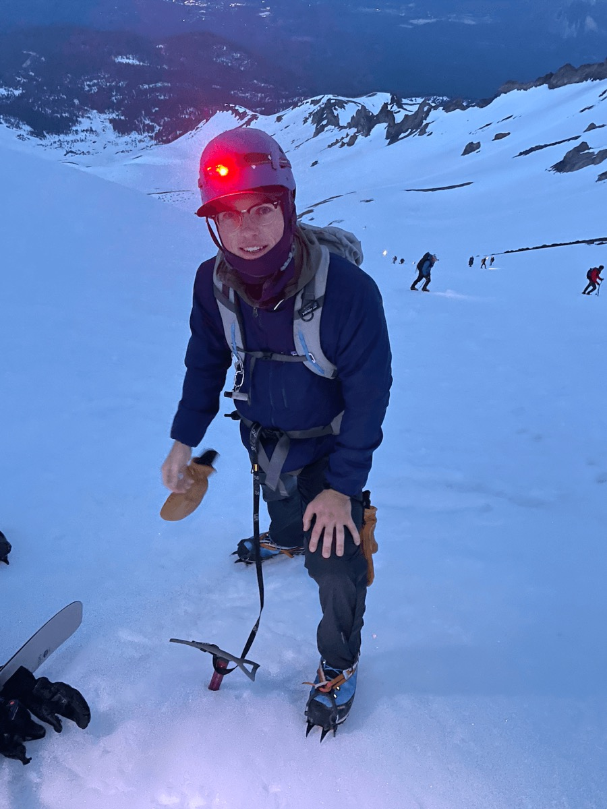

Benjamin Holland / Personal website
Hi, I’m
Ben.
I’m a product manager at Lucidworks. My background is in software development and applied machine learning, and I’ve spent a lot of time studying and working with analytics, data science, and AI. I still enjoy writing code and building things of my own.

2023 ↗
01 / Projects
Projects &
things I’m working on.
A mix of personal projects, tools I use,
and products I’ve worked on at Lucidworks.
Showing all 6 projects
02 / A bit about me
A little
background.
I studied economics at Cal Poly and business analytics at CU Boulder, with a focus on decision science.
At Lucidworks, I work on enterprise AI and platform products, including the core UI and usability experience. I spend time with customers, work with engineering and design, and help decide what we build next.
Before moving into product, I worked in software development and applied machine learning, working directly with enterprise and government customers on search, analytics, and AI.
I’m interested in how AI changes the way we build and use software. I use it in my own work, including connecting research, drafting requirements, and building prototypes.
This site is a place to share some projects, keep track of adventures, and collect things I’m interested in.
03 / Outside of work
A few things
I enjoy.
Outside of work, I enjoy running, skiing, climbing, hiking,
and going to the gym, along with cooking, painting,
and photography.
I ran track and cross country at Cal Poly, where I was a team captain. I still keep a running archive here, along with photos and notes from trips.
Adventures, running records & other interests ↗04 / Get in touch
Say hello.
You can find me on LinkedIn and GitHub,
or send me an email.